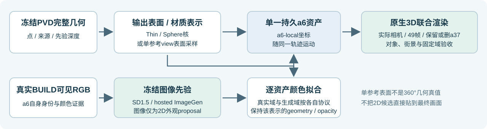
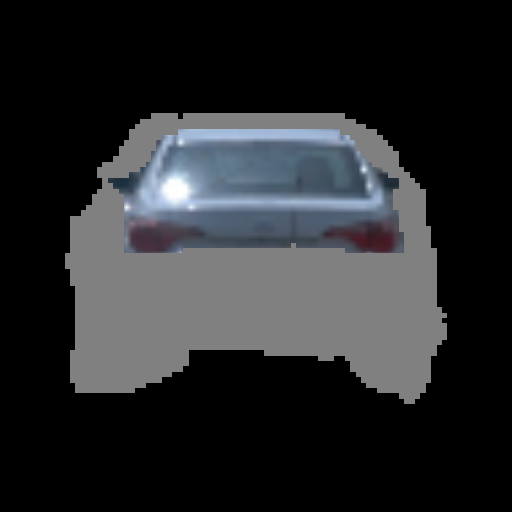
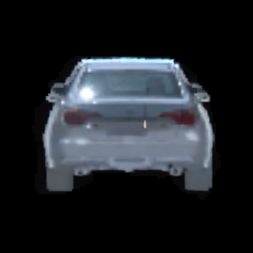
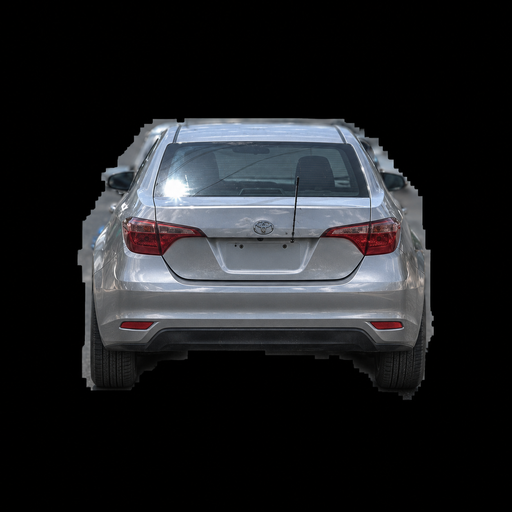
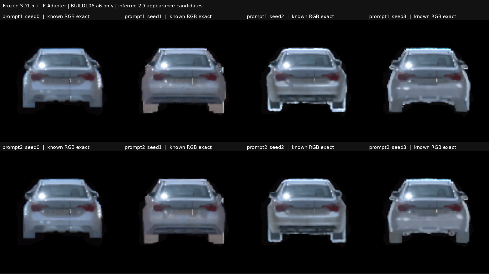
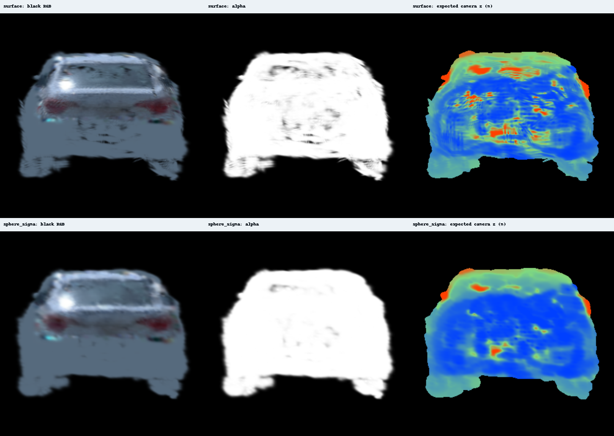

49帧真实3D渲染
主列共享同一原始1920相机和对象裁剪。Observed仅显示真实可见RGB；黑色未知区域不是GT。拖动查看raw089–137；分割标签用于验收展示，不用于重新挑选候选。
同一资产放回街景
街景对照来自原生3D场景渲染：a37保留 / a37删除。道路与环境保持冻结；对象图与街景使用的分辨率以final_gallery receipt为准。
正式表面结果：颜色与深度分别看
三行均读取正式surface评价receipt的summary。颜色采用同一9 HELD原始HR固定可见域；深度为all49固定LiDAR域，未混用低分辨率可见RGB表。
| 表示 / 颜色协议 | 9 HELD HR black-RGB MAE | 9 HELD HR normalized-RGB MAE | all49 LiDAR depth MAE / m | all49 visible alpha | 来源 |
|---|---|---|---|---|---|
| Sphere + strong | 0.0419967 | 0.0413874 | 0.285799 | 0.998699 | receipt |
| 单view表面 · raw106原型 | 0.0446774 | 0.0439587 | 0.317099 | 0.999794 | receipt |
| 单view表面 · 40BUILD正式颜色 | 0.0411078 | 0.0406127 | 0.317099 | 0.999794 | receipt |
原型以raw106着色；正式版仅增加同一40BUILD真实RGB域的32-step smoke与1000-step颜色拟合，保持原型geometry/opacity与未知列先验颜色，无新生成色1000步。可见RGB小幅改善不代表隐藏表面更准确；表面深度误差仍需单独评估。
保留域验收：参数冻结仍会改变成像
正式表面资产相对Sphere + strong作49帧真实native paired评价。下表为固定保留域的实际渲染变化，期望深度差不是对实测深度的误差。
| 状态 / 固定域 | RGB变化 >0.02 像素 / 分母 | 比例 | RGB变化均值 | 期望深度变化均值 / m | 期望深度变化最大值 / m |
|---|---|---|---|---|---|
| a37保留 / outside | 7,037 / 6,312,448 | 0.1115% | 0.00012889 | 0.00594 | 30.74 |
| a37删除 / outside | 10,528 / 6,312,448 | 0.1668% | 0.00027120 | 0.01356 | 31.38 |
| a37保留 / a37可见域 | 0 / 536,128 | 0.0000% | 0.00000158 | 0.00000 | 0.12 |
| a37保留 / road | 32 / 1,075,281 | 0.0030% | 0.00000207 | 0.00000 | 0.31 |
固定域来自480×320原生相机，变化像素按0.02阈值统计，不声称精确非零像素数。删除a37状态不把原前景深度当作隐藏背景真值。下载完整paired49 preservation JSON
输入、外观先验与资产数据流
生成图提供未知表面的材质建议；主资产对照由共享PVD点与相机渲染；单参考表面试验另列。Sphere对照在颜色拟合前仅令厚度等于sigma。

2D外观候选与冻结选择
此处为外观先验的二维输出，尚不能代表完整3D结果。离线SD固定两条prompt × seeds 0–3；根据BUILD形状可用性冻结prompt2_seed3。Hosted strong共两次调用，下面展示v2材质proposal。
灰色区域为未知placeholder；黑底为对象外，未作为生成目标。

仅凭BUILD形状可用性选择；候选外像素精确恢复。

Hosted生成；颜色与隐藏细节均为推断。

固定8个SD候选对照板
两条prompt × 四个seed；未据HELD改选。

输出核形状与颜色、深度的折中
Thin与Sphere保持同一XYZ、sigma、opacity及来源；Sphere仅令thickness=sigma，然后在完全相同的真实BUILD像素域重新拟合颜色。核形状改变会影响覆盖、alpha及期望深度。本报告不自动采用Sphere。
此图是拟合前厚度变换对照，不代表自动采用Sphere。

| 观测颜色控制 | 9 HELD HR black-RGB MAE | 9 HELD HR normalized-RGB MAE | 49帧LiDAR depth MAE / m | 49帧LiDAR alpha |
|---|---|---|---|---|
| Thin / HR observed | 0.049348 | 0.040940 | 0.274980 | 0.998057 |
| Sphere / HR observed | 0.041997 | 0.041387 | 0.285799 | 0.999299 |
HR颜色指标在固定的原始可见域评估，未据alpha改变分母；LiDAR为原始固定实测深度域。这里的HELD仍继承同场景几何上下文，不代表独立几何泛化。HR固定域JSON LiDAR固定域JSON
单参考view的表面输出试验
Projective surface由单参考view的sphere alpha/depth重采样为小球surfels，再转入a6-local随轨迹作统一native深度排序。它是view-conditioned surface output test；点集与PVD共享点对照不同，不能据此声称360°补全或独立几何真值。
| 实际结果文件 | 状态 | 证据 |
|---|---|---|
| data\output_adapter\projective_surface\evaluation\receipt.json | PASS | receipt |
| data\output_adapter\projective_surface\formal_observed\evaluation\receipt.json | PASS | receipt |
| data\output_adapter\projective_surface\formal_observed\formal\receipt.json | PASS | receipt |
| data\output_adapter\projective_surface\formal_observed\preservation_evaluation\receipt.json | PASS_FIXED_CROSS_REPRESENTATION_PRESERVATION_AUDIT | receipt |
| data\output_adapter\projective_surface\formal_observed\smoke\receipt.json | PASS | receipt |
实际summary与拟合记录
下列值直接从已取回的summary/receipt读取。可见区域指标不能评价从未观测的下半部真实颜色；缺失数据以“—”保留。
| 分支 | all49可见a6 RGB MAE | all49实测depth MAE / m | 保留a37区域RGB变化 | 来源 |
|---|---|---|---|---|
| Thin + SD（离线baseline） | 0.055259n=39,308 | 0.274980n=8,930 | 0.00000152 | summary |
| Thin + strong | 0.055267n=39,308 | 0.274980n=8,930 | 0.00000238 | summary |
| Sphere + strong | 0.050076n=39,308 | 0.285799n=8,930 | 0.00000245 | summary |
| 分支 | 优化对象 | 正式颜色步 | 更新primitive列 | 神经权重训练步 | 证据 |
|---|---|---|---|---|---|
| Thin + SD（离线baseline） | 生成候选 → 资产颜色 | 1,000 | 8,905 | 0 | receipt |
| Thin + strong | 生成候选 → 资产颜色 | 1,000 | 8,905 | 0 | receipt |
| 低分辨率M2 + strong（诊断） | 生成候选 → 资产颜色 | 1,000 | 6,766 | 0 | receipt |
| M2 base + strong（诊断） | 生成候选 → 资产颜色 | 1,000 | 9,196 | 0 | receipt |
| Thin / HR observed | 真实BUILD RGB → 资产颜色 | 1,000 | 见receipt | 0 | receipt |
| 单参考view / projective surface | 真实BUILD RGB → 资产颜色 | 1,000 | 见receipt | 0 | receipt |
| Sphere / HR observed | 真实BUILD RGB → 资产颜色 | 1,000 | 见receipt | 0 | receipt |
| Sphere + strong | 生成候选 → 资产颜色 | 1,000 | 7,237 | 0 | receipt |
CPU/CUDA的逐资产颜色迭代不等于预训练神经权重训练。Smoke、失败尝试和next-step重放独立记入ledger；hosted模型未暴露权重hash，也未建立确定性重放。
可下载证据与复现入口
审查与结果JSON
- data/candidates_raw106/prompt1_seed0/receipt.json
- data/candidates_raw106/prompt1_seed1/receipt.json
- data/candidates_raw106/prompt1_seed2/receipt.json
- data/candidates_raw106/prompt1_seed3/receipt.json
- data/candidates_raw106/prompt2_seed0/receipt.json
- data/candidates_raw106/prompt2_seed1/receipt.json
- data/candidates_raw106/prompt2_seed2/receipt.json
- data/candidates_raw106/prompt2_seed3/receipt.json
- data/final_gallery/receipt.json
- data/final_gallery_formal_surface/receipt.json
- data/final_gallery_surface/receipt.json
- data/generated_fit/sd_hr_hrfit/evaluation/receipt.json
- data/generated_fit/sd_hr_hrfit/evaluation/summary.json
- data/generated_fit/sd_hr_hrfit/receipt.json
- data/generated_fit/strong_hr_hrfit/evaluation/receipt.json
- data/generated_fit/strong_hr_hrfit/evaluation/summary.json
- data/generated_fit/strong_hr_hrfit/preview_106113/receipt.json
- data/generated_fit/strong_hr_hrfit/receipt.json
- data/generated_fit/strong_m2/preview_106113/receipt.json
- data/generated_fit/strong_m2/receipt.json
- data/generated_fit/strong_m2_hrfit/preview_106113/receipt.json
- data/generated_fit/strong_m2_hrfit/receipt.json
- data/highres/formal/receipt.json
- data/highres/smoke/receipt.json
- data/highres_evaluation/summary.json
- data/hosted_generation/hosted_generation.json
- data/inputs/raw106/receipt.json
- data/inputs_hr/raw106/receipt.json
- data/output_adapter/projective_surface/evaluation/metrics49.json
- data/output_adapter/projective_surface/evaluation/receipt.json
- data/output_adapter/projective_surface/formal_observed/evaluation/metrics49.json
- data/output_adapter/projective_surface/formal_observed/evaluation/receipt.json
- data/output_adapter/projective_surface/formal_observed/formal/receipt.json
- data/output_adapter/projective_surface/formal_observed/preservation_evaluation/receipt.json
- data/output_adapter/projective_surface/formal_observed/preservation_evaluation/summary.json
- data/output_adapter/projective_surface/formal_observed/smoke/receipt.json
- data/output_adapter/projective_surface/prepare_receipt.json
- data/output_adapter/receipt.json
- data/output_adapter/sphere_highres/evaluation/held_hr.json
- data/output_adapter/sphere_highres/evaluation/lidar49.json
- data/output_adapter/sphere_highres/evaluation/receipt.json
- data/output_adapter/sphere_highres/formal/receipt.json
- data/output_adapter/sphere_highres/smoke/receipt.json
- data/output_adapter/sphere_inputs_hr/raw106/receipt.json
- data/output_adapter/sphere_inputs_hr/raw114/receipt.json
- data/output_adapter/sphere_inputs_hr/raw129/receipt.json
- data/output_adapter/sphere_strong_v2/cross_kernel_evaluation/receipt.json
- data/output_adapter/sphere_strong_v2/cross_kernel_evaluation/summary.json
- data/output_adapter/sphere_strong_v2/evaluation/receipt.json
- data/output_adapter/sphere_strong_v2/evaluation/summary.json
- data/output_adapter/sphere_strong_v2/receipt.json
- data/reviews/projective_preservation.json
- evidence/backend_inventory.json
- evidence/experiment_ledger.json
- evidence/io_safety_review_final.json
- evidence/projective_surface_io_review.json
- evidence/sd_batch_manifest.json
- evidence/sd_candidates_qa.json
- evidence/sd_model_manifest.json
- evidence/selection_prompt2_seed3.json
- evidence/sphere_output_and_fit_review.json
实际脚本
- code/backend/collect_experiment_ledger_remote.py
- code/backend/frozen_sd15_inpaint.py
- code/backend/publish_appearance.py
- code/backend/review_io_cpu.py
- code/backend/review_projective_surface_cpu.py
- code/backend/review_sphere_cpu.py
- code/final_gallery.py
- code/fit_adapter/adapter.py
- code/fit_adapter/bridge_packet.py
- code/highres_fit.py
- code/output_adapter/fit_sphere.py
- data/source/backend/frozen_sd15_inpaint.before_prompt_receipt.py
- data/source/backend/frozen_sd15_inpaint.initial.py
- data/source/backend/frozen_sd15_inpaint.py
- data/source/backend/summarize_candidates.py
- data/source/collect_publication.py
- data/source/final_gallery.py
- data/source/final_gallery_formal.py
- data/source/final_gallery_surface.py
- data/source/fit_adapter/adapter.py
- data/source/fit_adapter/bridge_packet.py
- data/source/fit_adapter/cross_kernel_eval.py
- data/source/fit_adapter/cross_representation_eval.py
- data/source/fit_adapter/native_extract.py
- data/source/fit_adapter/render_asset.py
- data/source/fit_adapter/test_adapter_cpu.py
- data/source/highres_fit.py
- data/source/inputs/collect_highres.py
- data/source/inputs/collect_inputs.py
- data/source/inputs/finalize_inputs.py
- data/source/inputs/qa_highres_local.py
- data/source/output_adapter/collect_sphere_inputs.py
- data/source/output_adapter/diagnose_kernels.py
- data/source/output_adapter/evaluate_sphere.py
- data/source/output_adapter/fit_sphere.py
- data/source/output_adapter/package_sphere.py
- data/source/output_adapter/projective_surface/evaluate_projective_formal.py
- data/source/output_adapter/projective_surface/evaluate_projective_surface.py
- data/source/output_adapter/projective_surface/fit_projective.py
- data/source/output_adapter/projective_surface/package_projective_formal.py
- data/source/output_adapter/projective_surface/package_projective_surface.py
- data/source/output_adapter/projective_surface/prepare_projective_surface.py
- data/source/preview_hr.py
远端run：/root/autodl-tmp/drivingeditor_repro/campaign/scene008_a6_appearance_formal_20261105
固定SD prompts与参数路径
rear view of a silver sedan, realistic complete rear bumper and lower car body, matching the visible silver trunk and red taillights, black background
Photorealistic rear view of the same silver four-door sedan. Complete the missing trunk-lid license-plate recess, silver bumper, dark lower valance, rear tires and a small exhaust. Match existing taillights, proportions, camera and daylight. Single car on pure black background.
Use case: precise-object-edit. This is a scientific vehicle texture completion candidate, not a finished street photograph. Edit the supplied 512x512 rear-view vehicle crop. Keep exactly the same canvas, car position, camera, overall silhouette, roof, rear window and upper red tail lights. The flat grey lower half is missing texture, NOT a rectangular object. Complete that missing lower half as the natural continuation of THIS SAME silver four-door sedan: a realistic silver trunk lid below the lights, centered license plate recess with unreadable plate, shaped silver rear bumper with realistic highlights and shadows, dark lower valance, dark rear tires at the two bottom corners, a small realistic exhaust if plausible. Maintain the existing compact sedan proportions and bumper extent within the input silhouette. Match the actual upper silver paint and daylight. Do not redesign the visible upper car. Preserve the solid pure black background without ground or street or cast shadow. One vehicle, no labels, no border, no inset, no extra objects. Output the identical framing at 1024x1024 (uniform2x of the input), car pixel bounding rectangle approximately x132..894,y228..804 in the1024 canvas; no zoom or recentering. Prioritize believable bumper, license-plate recess, dark underbody and tires instead of featureless grey fill. The generated missing texture will be treated as inference, never measurement.
Edit this image for a 3D vehicle texture experiment. Complete the missing texture of the silver sedan itself. Use the entire existing car silhouette as the target: the wide flat grey lower region belongs to the same car body and must ALL become realistic silver bumper/side panels/dark tires, with no ghost car, no surrounding grey halo, no second silhouette or smaller inserted vehicle. Do not place a smaller new car inside it. Preserve the exact car position, scale, rear camera and visible roof/window/tail-light locations. Continue the same silver sedan naturally downward: trunk and plate recess, bumper with crisp horizontal creases, small red lower reflectors, dark lower bumper trim, rubber tires in the two lower corners. Keep pure black everywhere outside the original silhouette, including the gap beneath the bumper. Match realistic street daylight. Improve realistic material detail while keeping the upper body the same vehicle, not a different model. Single rear-view car on black; no text, no street or ground. Same square canvas and framing; image is a texture proposal to be fitted to fixed existing geometry, so silhouette/framing preservation is critical.
CFG、步数、seed、IP-Adapter及本地checkpoint hash见sd_model_manifest与sd_batch_manifest。Hosted输出以返回图像文件hash追踪，不将其误称为模型权重hash。